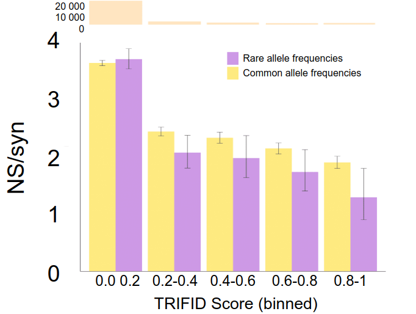

class: center, middle ### Poster presentation EvoCompGen COSI 826 # TRIFID: determining functional isoforms **Fernando Pozo**, Laura Martínez-Gómez and Michael L. Tress Bioinformatics Unit, Spanish National Cancer Research Center (CNIO) <img src="../poster/img/bu_cnio.png" alt="drawing" style="float: left; width:200px;" /> ??? Hello, welcome to my poster presentation, my name is Fernando Pozo and I am a PhD Candidate working at the Bioinformatics Unit from Spanish National Cancer Research Center. TRIFID: determining functional isoforms is the title of a work that intends to assess the functional importance of alternative splicing at protein level. --- <div style="text-align:center"> <img src="../poster/EvoCompGen_826.jpg" width="850" height="650" /> </div> --- # Introduction ## Background * Alternative Splicing (AS) of messenger RNA can generate a wide variety of mature RNA transcripts and this expression is confirmed by experimental transcript evidence. However, it is not clear how many alternative transcripts will code for functional proteins. ([Tress et al. 2017a](https://www.cell.com/trends/biochemical-sciences/pdf/S0968-0004(17)30071-3.pdf), [Blencowe et al. 2017](https://www.cell.com/trends/biochemical-sciences/pdf/S0968-0004(17)30070-1.pdf)). * Proteomics analyses have shown that most coding genes have a single main splice isoform ([Ezkurdia et al. 2015](https://pubs.acs.org/doi/10.1021/pr501286b)). * Human population variation data indicate that most alternative transcripts are evolving neutrally ([Tress et al. 2017](https://www.sciencedirect.com/science/article/pii/S0968000416301189?via%3Dihub)). * Ever more splice isoforms are annotated every day, but we do not know their function. ??? It is well known that alternative splicing of messenger RNA can generate a wide variety of mature transcripts, but how many alternative transcripts will code for functional proteins is still a controversial topic nowadays. Recent publications in proteomics analyses have shown that most protein coding genes have a single main splice isoform. Moreover, the human population variation data indicate that most alternative transcripts are evolving neutrally. Furthermore, new sequencing technologies will expand the number of transcript models. Therefore, the number of annotated isoforms continues growing, but we don’t know the function of most of them. --- # Introduction ## Objectives <div style="text-align: center; font-size: 150%; font-weight: bold;", markdown = "1"> <br><br> Grading what proportion of AS is functional. <br><br> Developing a machine learning based tool for predicting splice isoform functional importance. </div> ??? First, this work aims to determine what proportion of alternative splicing is functional and, also the second objective was to develop a machine learning based tool for predicting splice isoform functional importance. --- # Methods **`TRIFID` (Tool to Reliable Identification of Functional Isoform Data)** <br><br><br><br> Random Forest based **predictor of the relative functional importance of splice isoforms**. <br><br> <br><br> It has been trained on: - **Peptide evidence** from 497 genes from the largest tissue-based proteomics analysis to date (79 experiments) - **47 features** categorized in 5 groups: *genome annotation*, *structural*, *splicing impact*, *cross-species conservation* and *RNA-seq expression*. <br><br> <br><br> [Development code](https://gitlab.com/bu_cnio/trifid) and [poster presentation](https://gitlab.com/fpozoc/ismb2020_evocompgen_826) repositories. ??? TRIFID, as an acronym of Tool to Reliable Identification of Functional Isoform Data and is a Random Forest based predictor of the relative functional importance of splice isoforms. It has been trained on reliable peptide evidence from almost five hundred genes from the largest tissue-based proteomics analysis to date, and extracting almost fifty features which come from several sources and were categorized in 5 biological feature groups. In order to facilitate the reproducibility of the method, both sources of information, predictions and code implementation of TRIFID are available in the clickable gitlab repository that you can see at the left bottom of the poster. --- # Results ## SHAP feature importances and model interpretation <div style="text-align:center"> <img src="../poster/img/figure1.png" width="500" height="250" /> </div> <figcaption>Figure 1: SHAP values added by category. Features that best distinguish functional isoforms in the training set are conservation-based. Other important features include the length difference between the alternative isoform and the longest isoform, whether or not the transcript has a CCDS, and the conservation of Pfam functional domains. The SHAP scores can also provide clues to the influence of features on individual predictions (see poster example: Fibroblast growth factor receptor 1)</figcaption> ??? Describing the results of the study, the first figure presented in the top middle of the poster represents the SHapley Additive exPlanations and therefore, the model interpretation of TRIFID. SHAP is a game theoretic approach that explains the output of a machine learning model. In our case, it has been used to set which group of features best distinguish the isoform functionality, being the conservation or evolutionary based the most important ones in our model. SHAP scores can also provide clues to the influence of features on local predictions. If you want to know more about the interpretation of the predictions you can click on the TRIFID Scores of Fibroblast Growth Factor Receptor One , presented here as an example of features interpretability. --- # Results ## Functional importance in the human genome <div style="text-align:center"> <img src="../poster/img/figure2.png" width="700" height="250" /> </div> <figcaption>Figure 2: Non-redundant isoforms divided into PRINCIPAL or ALTERNATIVE according to their annotation in APPRIS. Most ALTERNATIVE isoforms have TRIFID scores below 0.05. Most PRINCIPAL isoforms have predictor scores above 0.9.</figcaption> ??? Below, the figure number two shows how TRIFID predicts the functional importance of the entire human annotated genome. In this case, a set of non-redundant isoforms is divided into PRINCIPAL or ALTERNATIVE according to their annotation in APPRIS. APPRIS is a database which annotates the main isoform for the protein coding genes. Most PRINCIPAL isoforms present scores above 0.9 and at the same time, most of the ALTERNATIVE isoforms are concentrated in the between 0 and 0.1. --- # Results ## Validating the model against an external source of information <div style="text-align:center">  </div> <figcaption>Figure 3: Non-synonymous to synonymous (NS/Syn) ratios for alternative exons (exons that are exclusively present in alternative isoforms). Exons under selective pressure should have significantly lower NS/Syn ratios for common than for rare allele frequencies. The vast majority of alternative exons are not under selective pressure.</figcaption> ??? Since we used proteomics evidence to train the data, we required an orthogonal evidence source to validate our predictions for the whole genome. This figure shows the non synonymous to synonymous ratio of alternative exons, that are exons exclusively present in alternative isoforms, splitted by TRIFID scores. Exons under selective pressure should have lower ratio for common than for rare allele frequences and therefore, we can see in the figure that the vast majority of alternative exons are not under selective pressure. --- # Conclusions <br> * `TRIFID` discriminates functionally important isoforms with high confidence (MCC=0.89, AUPRC=0.98 over 5-folds CV of the training set). Thanks to TRIFID, we can now list the most biologically relevant alternative isoforms. Our model can be successfully exported to different genome species and genome annotation databases. <br><br> <br><br> * `TRIFID` predicts that a large majority of splice variants (85-90%) in the human genome are likely to not be functionally important at the protein level. <br><br> <br><br> * NS/Syn ratios show that exons from the highest scoring of alternative transcripts are under selective pressure, while low scoring exons have little or no evidence of selection. ??? Finally, we can conclude that TRIFID discriminates functionally important isoforms with high confidence, having a Matthew Correlation Coefficient of 0.89, Area Under the Precision Recall Curve of 0.98 over 5-folds CV of the training set). Thanks to TRIFID, we can now list the most biologically relevant alternative isoforms. Moreover, our model can be successfully exported to different genome species and genome annotation databases. TRIFID also predicts that a large majority of splice variants (85-90%) in the human genome are likely to not be functionally important at the protein level. And lastly, non synonymous to synonymous ratios show that exons from the highest scoring of alternative transcripts are under selective pressure, while low scoring exons have little or no evidence of selection.